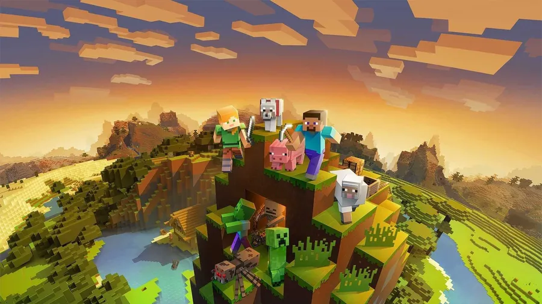

Minecraft
Minecraft Minecraft, a cultural phenomenon in the gaming world, was created by Swedish developer Markus Persson, also known as "Notch," and released in 2011. This sandbox game allows players to explore, build, and survive in a blocky, procedurally-generated 3D world. The simplicity of its pixelated graphics belies the incredible depth and creativity the game offers. You can explore vast landscapes, mine resources, craft tools, and construct elaborate structures, all while interacting with a diverse range of creatures.
Minecraft originated from Persson's passion for sandbox games, and its development began in May 2009. Initially, it gained popularity through online forums and word of mouth. The game's official release in 2011 marked the beginning of its widespread success, eventually becoming one of the best-selling video games of all time.
Playing Minecraft involves exploring the open-world environment, mining resources such as wood and stone, and using those resources to craft tools and structures. The game features various modes, including Creative mode, where players have unlimited resources and can focus on building, and Survival mode, where players must manage resources and face challenges like hostile mobs. With its endless possibilities, Minecraft encourages creativity and collaboration, making it a favorite among players of all ages.
Minecraft's popularity stems from its accessibility, versatility, and the sense of limitless creativity it provides. The game has been released on multiple platforms, including PC, consoles, and mobile devices, contributing to its widespread appeal. Minecraft's impact extends beyond gaming, with an active modding community, educational adaptations, and cultural references in mainstream media. Its enduring popularity is a testament to the game's ability to captivate players and foster a sense of exploration and creation.
Image of Minecraft